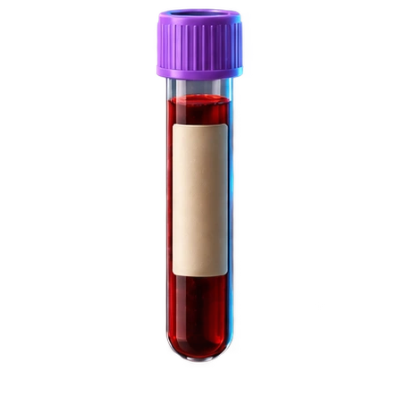

INSIDE THE LABORATORY
Pause motion
Topics
Microscope overview
Red Blood Cells
Sickle Cell Disease
White Blood Cells
Blood Cancers & DNA
Bacteria
Viruses
Malaria & Parasites
Laboratory Instrumentation
Return to the microscope
Exploration 08 / 08
Laboratory Instrumentation
Your next discovery starts here.
More to explore soon.

PREVIOUS TOPIC
Malaria & Parasites
INSIDE THE LABORATORY
NEXT TOPIC
Red Blood Cells